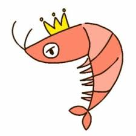
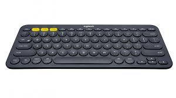

Like
이적의 2010년 발매한 4집 '사랑'의 수록곡 '이상해'라는 노래입니다.
이 앨범에 있는 모든 노래들을 좋아해서 앨범을 따로 구매하려 했지만 현재는 중고로 밖에 팔지않습니다...
앨범 수록곡을 들을때마다 사려고 뜸들이다가 새제품을 못샀네요ㅠ
가을이라서 그런지 어쿠스틱 기타의 소리가 더욱 매력적으로 느껴지거든요.
고음이 많거나 기교가 거의 없는 잔잔한 곡이라서 호불호가 갈리겠지만
2011년부터 계속 듣고있는 정말 좋아하는 곡입니다.
다들 알고 있는 '작은별'의 12종류의 변주가 담긴 곡입니다.
Pazil Say의 힘있고 군더더기 없는 연주가 매력적이에요.
피아노를 연주하면서 목소리까지 더하는 피아니스트는 처음봐서 신기하기도 했고요
그래서 더 좋아합니다. ㅎㅎㅎ
아래는 작은별 변주곡 위키를 긁었어요.
『작은별 변주곡』(원제 : 12 Variationen über ein französisches Lied "Ah, vous dirai-je, maman")
다장조 K. 265는 볼프강 아마데우스 모차르트가 1778년에 작곡한 피아노 곡이다.
주제
주제의 제시이지만 현재 『작은별』로 알려진 곡보다는 약간 꾸밈이 있다.
제 1변주
16분음표와 정교한 반음계의 도입으로 반짝이는 효과를 내고있다.
제 2변주
왼손의 상쾌한 아르페지오가 빠른 패시지로 등장.
제 3변주
왼손의 아르페지오로 아름다운 음색을 낸다.
제 4변주
왼손이 10음계를 튀는 성가신 부분. 변덕스러운 분위기를 자아낸다.
제 5변주
여기서는 한번 고요해진다. 가벼운 화음에 불협화음이 일부 섞이는것으로 인해 더욱더 사랑스러움이 넘친다.
제 6변주
왼손의 빠른 패시지와 함께 오른손이 메인이다. 도중에 오른손에도 빠른 패시지가 온다.
제 7변주
오른손의 1옥타브 스케일로 시작하는 장대함이 나타난다.
제 8변주
다단조로 넘어간다. 여기서는 다단조의 분위기로 무겁게 흘러간다.
제 9변주
다장조로 돌아간다. 경쾌한 음이 울려 퍼진다.
제 10변주
손이 교차된다. 화음과 함께 고조된다.
제 11변주
빠르기가 아다지오로 바뀐다. 다소 주제에 손을 대는 부분도 있다. 느리고 온화한 분위기이다. 최종 변주 전의 완서악장과 같은 역할이다.
제 12변주
3박자가 된다. 왼손의 빠른 패시지로 시작되어 매우 빠르다. 마지막은 크레센도로 끝난다.


예전에 자바 과제할때 많이 쓰던 조합이라서 소개하고 싶었어요.
유튜브에 경제나 주식 관련 이야기들을 들려주는 '슈카월드'라는 유튜버가 있어요.
말도 정말 재미있게 하시고 세세하게 알아보지 않으면 알지 못하는 내용들을 알려줘요.
화면을 굳이 볼 필요도 없었고 그냥 듣기만 해도 재미가 있었기 때문에 JAVA 과제 하면서
많이 들었어요.
거기다가 키감이 좋다고 사람들사이에 유명한 Logitech사의 K380이라는 제품이 있어요.
키감으로 키보드를 두들기는 맛도 있고 슈카월드에서 들려주는 이야기도 들으며 작업을 했기에
그나마 오랫동안 앉아서 작업을 할 수 있었다고 생각됩니다.